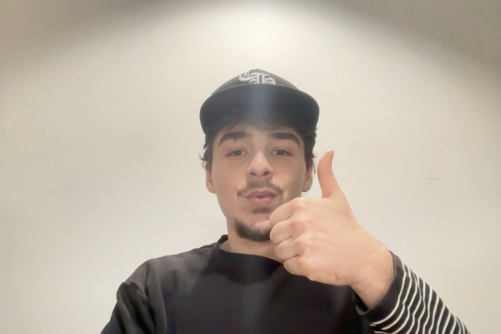

Interviewed by [your name]
Name three designers whose work you find inspiring.
Name something (a format, an item) you want to learn how to design but haven't had the chance to try to yet. Video game
If you were a font, you'd be (you can't say helvetica or comic sans-- both jokes are played). Explain why? Battery park
Name one website that you rely on (try to avoid a platform like google/amazon/pinterest/etc) adobe font [Ask at least one of your own questions to your interviewee] What's your favriote project fron Graphic Design1- Poestry motion [Take a photo of your interviewee] 